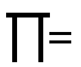

Welcome to the wonderful world of Indian mathematics!
Are you wondering if we are starting with a prayer? Well, may be. Actually, we are presenting to you the Indian encoding of the enigmatic number 'PI' up to 32 decimal places in the form of a shloka !

You've probably heard of the glorious achievements of traditional Indian thinkers, astronomers and philosophers. You would've also known about the work of such intellectuals in the field of mathematics. But did you know that mathematics was also used in day-to-day activities by the common man? It is this simplicity of Indian Mathematics that we would like to introduce you to. We are going to present to you some of the basic techniques where you can experience the power of Indian Mathematics.
Before going into that, a few words about our rich tradition. Did you know, for instance that ....
Well, it only gets more interesting ! So, just go on and explore for yourself !!!